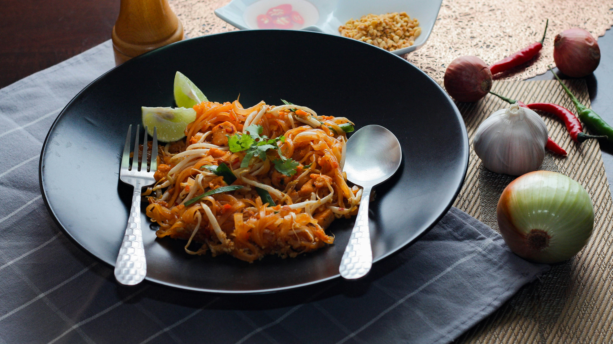

Peanut Noodles

Description
Peanut noodles are the perfect week night meal for cleaning out your fridge. Any leftover veggies can be thrown into the wok to make this protein-filled dish.
If you're not a huge peanut butter person, feel free to reduce the amount in this recipe. The rest of the sauce is happy to pick up the slack.
Ingredients
- Veggies of choice (I usually use bell peppers, broccoli, mushrooms and carrots) cut into bite-sized amounts
- One chicken breast, cooked and shredded
- Two packages of udon noodles
- 1 tbsp ginger
- 1 tbsp garlic
- Sesame oil, for cooking
Sauce Ingredients
- 1/3 cup of peanut butter, smooth or chunky
- 1/3 cup soy sauce
- One tbsp apple cider vinegar
- One tbsp honey or brown sugar
- A dash of oyster sauce
- Sriracha and red pepper flakes to taste
- 1/2 cup hot water
Steps
- Boil a pot of water.
- In a measuring cup, combine all of the sauce ingredients except for the hot water.
- In a wok over medium heat, add sesame oil, ginger and garlic. Cook until fragrant.
- Add your veggies to the wok. Stir until they have begun to cook.
- Add half your sauce to the walk. Stir to combine.
- Add hot water to your measuring cup and stir. You should have a slightly watered down sauce. Set aside.
- When the sauce in the wok has cooked down (about 5 minutes), add the remaining sauce from your measuring cup. Let simmer.
- Add your udon noodles to the boiling water. Once they have seperated, move them directly from the boiling water to the wok with tongs. You may get some water drips in the wok, that's okay, it will help the sauce come together.
- Add your shredded chicken to the walk. Stir to combine.
- Let the mixture cook down to your desired thickness. Taste for season.
- Serve with sriracha. Enjoy!